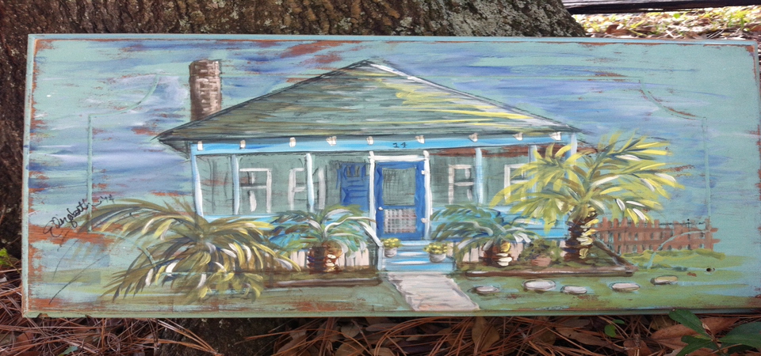

- 
Beth Melton-Seabrook Artist Statement
Growing up on the vibrant waterways of the South Carolina Lowcountry has afforded me the luxury of the most incredible of inspirations that range from the egret’s graceful steps along a creek bank to the fin flash of a bass rising through the deeper currents. My work pays homage to the diverse coastal life and the lush green and golden marsh and woodlands that surrounded my childhood and continue to captivate my attention. While my subject matter is drawn from the local landscape, my technique arises from family traits. I draw from my paternal grandmother’s artistic endeavors and my parents’ continued encouragement, and what I draw (and paint) on can be blamed on my maternal grandparents. Their greatest love--besides for one another--was their early Saturday morning jaunts to the local garage sales. I confess that I come by my scavenging tendencies honestly, as I love collecting the recycled surfaces almost as much as I love creating the art itself. The playful and color-rich images of the Lowcountry come to life on recycled surfaces of every shape and size and create both an element of surprise and a reverence for the past.